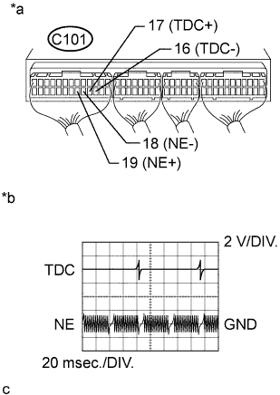

DTC 13 (2) Engine Speed Sensor Circuit Malfunction |
| DTC No. | DTC Detection Condition | Trouble Area |
| 13 (2) | No NE signal is sent to the ECM for 0.5 sec. or more at 680 rpm or more. |
|
| No NE signal is sent to the ECM for 2.0 sec. or more during cranking. |
| 1.INSPECT ENGINE SPEED SENSOR |
Inspect the engine speed sensor (See page Нажмите здесь).
|
| ||||
| OK | |
| 2.CHECK ECM (TDC, NE SIGNAL) |
|  |
While cranking or idling, check the waveforms according to the value(s) in the table below.
| Tester Connection | Condition | Specified Condition |
| C101-17 (TDC+) - C101-16 (TDC-) | Idling | Correct waveform is as shown |
| C101-19 (NE+) - C101-18 (NE-) | Idling | Correct waveform is as shown |
| *a | Component with harness connected (ECM) |
| *b | TDC and NE Signal Waveforms |
|
| ||||
| OK | ||
| ||
| 3.CHECK HARNESS AND CONNECTOR (ECM - ENGINE SPEED SENSOR) |
Disconnect the engine speed sensor connector.
Disconnect the ECM connector.
Measure the resistance according to the value(s) in the table below.
| Tester Connection | Condition | Specified Condition |
| C103-2 (NE+) - C101-19 (NE+) | Always | Below 1 Ω |
| C103-1 (NE-) - C101-18 (NE-) | Always | Below 1 Ω |
| Tester Connection | Condition | Specified Condition |
| C103-2 (NE+) or C101-19 (NE+) - Body ground | Always | 10 kΩ or higher |
| C103-1 (NE-) or C101-18 (NE-) - Body ground | Always | 10 kΩ or higher |
Reconnect the engine speed sensor connector.
Reconnect the ECM connector.
|
| ||||
| OK | ||
| ||